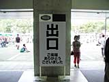
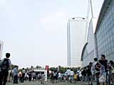
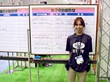
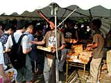

 今年の任天堂スペースワールドも、みなさんのおかげで大盛況で幕を閉じました。来場者のみなさん、暑いなか本当にお疲れ様でした。関東近辺に限らず、大阪や新潟などからいらしてくれた方もいたようで、感謝の気持ちでいっぱいです。
|
会場の出口では、いろんな人の姿を見ることができました。ゲームボーイ片手に元気よく走っていく男の子、自作のキャラクター衣装が入った紙袋を持った女の子、お子さんの購入した大きなぬいぐるみを抱えたお母さん、ぐっすり眠ったお子さんを抱きかかえるお父さん、などなど、会場にいらしたすべてのみなさん、本当にありがとうございました。みなさんの満足そうに帰っていく様子を見ると、任天堂の運営スタッフ一同、本当に開催してよかったなぁと実感することができます。帰りも混雑が予想されますが、ぜひ、気をつけてお帰りください。

|
運営に関わるすべての社外スタッフのみなさんもお疲れ様でした。出展ソフトのメーカーさんを始め、イベントを盛り上げてくれたタレントのみなさん、などなど、今回紹介できなかった社外スタッフのみなさんも全員、陰でスペースワールドを支えているのです。


|
最後にもう一度、たくさんの皆様のご来場、本当にありがとうございました。また、たくさんの笑顔に会えることを楽しみにしています。
|